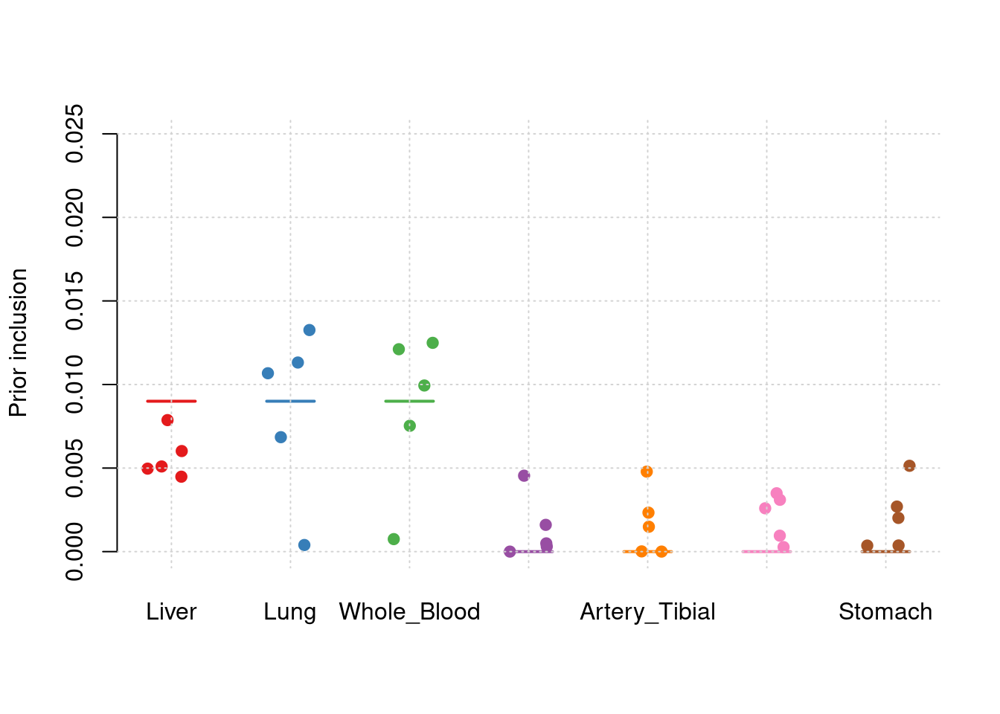
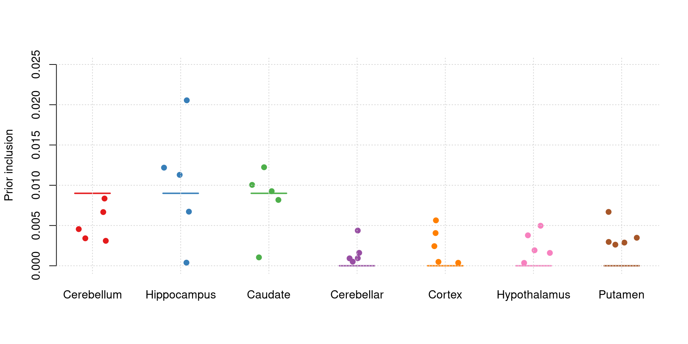

Seven Correlated Tissues Simulation
shengqian
2023-12-30
Last updated: 2024-01-03
Checks: 6 1
Knit directory: multigroup_ctwas_analysis/
This reproducible R Markdown analysis was created with workflowr (version 1.7.0). The Checks tab describes the reproducibility checks that were applied when the results were created. The Past versions tab lists the development history.
The R Markdown file has unstaged changes. To know which version of the R Markdown file created these results, you’ll want to first commit it to the Git repo. If you’re still working on the analysis, you can ignore this warning. When you’re finished, you can run wflow_publish to commit the R Markdown file and build the HTML.
Great job! The global environment was empty. Objects defined in the global environment can affect the analysis in your R Markdown file in unknown ways. For reproduciblity it’s best to always run the code in an empty environment.
The command set.seed(20231112) was run prior to running the code in the R Markdown file. Setting a seed ensures that any results that rely on randomness, e.g. subsampling or permutations, are reproducible.
Great job! Recording the operating system, R version, and package versions is critical for reproducibility.
Nice! There were no cached chunks for this analysis, so you can be confident that you successfully produced the results during this run.
Great job! Using relative paths to the files within your workflowr project makes it easier to run your code on other machines.
Great! You are using Git for version control. Tracking code development and connecting the code version to the results is critical for reproducibility.
The results in this page were generated with repository version 2f6c0dd. See the Past versions tab to see a history of the changes made to the R Markdown and HTML files.
Note that you need to be careful to ensure that all relevant files for the analysis have been committed to Git prior to generating the results (you can use wflow_publish or wflow_git_commit). workflowr only checks the R Markdown file, but you know if there are other scripts or data files that it depends on. Below is the status of the Git repository when the results were generated:
Untracked files:
Untracked: analysis/LDL_Liver_Adipose_E_S.Rmd
Unstaged changes:
Modified: analysis/index.Rmd
Modified: analysis/simulation_seven_tissues_correlated.Rmd
Note that any generated files, e.g. HTML, png, CSS, etc., are not included in this status report because it is ok for generated content to have uncommitted changes.
These are the previous versions of the repository in which changes were made to the R Markdown (analysis/simulation_seven_tissues_correlated.Rmd) and HTML (docs/simulation_seven_tissues_correlated.html) files. If you’ve configured a remote Git repository (see ?wflow_git_remote), click on the hyperlinks in the table below to view the files as they were in that past version.
| File | Version | Author | Date | Message |
|---|---|---|---|---|
| Rmd | 2f6c0dd | sq-96 | 2023-12-30 | update |
| html | 2f6c0dd | sq-96 | 2023-12-30 | update |
| Rmd | 0a32579 | sq-96 | 2023-12-30 | update |
| html | 0a32579 | sq-96 | 2023-12-30 | update |
library(ctwas)
library(data.table)
source("/project/xinhe/shengqian/cTWAS_simulation/summarize_basic_plots.R")
Attaching package: 'ggpubr'The following object is masked from 'package:cowplot':
get_legendsource("/project/xinhe/shengqian/cTWAS_simulation/summarize_ctwas_plots.R")
Attaching package: 'plyr'The following object is masked from 'package:ggpubr':
mutatesource("/project2/xinhe/shengqian/cTWAS/cTWAS_analysis/analysis/simulation_help_functions.R")
plot_PIP <- function(configtag, runtag, simutags, ...){
phenofs <- paste0(results_dir, runtag, "_simu", simutags, "-pheno.Rd")
susieIfs <- paste0(results_dir, runtag, "_simu",simutags, "_config", configtag,"_LDR",".susieIrss.txt")
f1 <- caliPIP_plot(phenofs, susieIfs, ...)
return(f1)
}Simulation 1: Three causal tissues and four non-causal tissues
30% PVE and 2.5e-4 prior inclusion for SNPs, 3% PVE and 0.009 prior inclusion for Brain Cerebellum, Brain Hippocampus and Brain Caudate basal ganglia. 0% PVE for other tissues.
Shared effect size parameters
For the cTWAS analysis, tissues shared an effect size parameter.
results_dir <- "/project/xinhe/shengqian/cTWAS_simulation/simulation_correlated_seven_tissues/"
runtag = "ukb-s80.45-3_7corr"
configtag <- 1
simutags <- paste(1, 1:5, sep = "-")
thin <- 0.1
sample_size <- 45000
PIP_threshold <- 0.8results_df <- get_sim_joint_res(results_dir,runtag,configtag,simutags,thin,sample_size,PIP_threshold)#results using PIP threshold (gene+tissue)
results_df[,c("simutag", "n_causal", "n_detected_pip", "n_detected_pip_in_causal")] simutag n_causal n_detected_pip n_detected_pip_in_causal
1 1-1 211 10 8
2 1-2 233 32 28
3 1-3 215 21 18
4 1-4 212 30 29
5 1-5 254 17 16#mean percent causal using PIP > 0.8
sum(results_df$n_detected_pip_in_causal)/sum(results_df$n_detected_pip)[1] 0.9#results using combined PIP threshold
results_df[,c("simutag", "n_causal_combined", "n_detected_comb_pip", "n_detected_comb_pip_in_causal")] simutag n_causal_combined n_detected_comb_pip n_detected_comb_pip_in_causal
1 1-1 209 40 36
2 1-2 232 69 55
3 1-3 212 40 37
4 1-4 212 56 52
5 1-5 253 49 43#mean percent causal using combined PIP > 0.8
sum(results_df$n_detected_comb_pip_in_causal)/sum(results_df$n_detected_comb_pip)[1] 0.8779528#prior inclusion and mean prior inclusion
results_df[,c(which(colnames(results_df)=="simutag"), setdiff(grep("prior", names(results_df)), grep("prior_var", names(results_df))))] simutag prior_SNP prior_Brain_Cerebellum prior_Brain_Hippocampus
1 1-1 0.0002395754 0.004483670 0.0068481880
2 1-2 0.0002427045 0.007869741 0.0132591028
3 1-3 0.0002355897 0.006018338 0.0003961507
4 1-4 0.0002386003 0.004966132 0.0113152506
5 1-5 0.0002455809 0.005096201 0.0106738503
prior_Brain_Caudate_basal_ganglia prior_Brain_Cerebellar_Hemisphere
1 0.000748970 4.543431e-03
2 0.012492771 1.787225e-06
3 0.012111091 4.935098e-04
4 0.007530475 3.052034e-04
5 0.009940482 1.602602e-03
prior_Brain_Cortex prior_Brain_Hypothalamus prior_Brain_Putamen_basal_ganglia
1 2.754072e-06 0.0034925487 0.0026968720
2 1.488891e-03 0.0025931239 0.0003692669
3 2.332537e-03 0.0009549596 0.0020164558
4 1.487342e-05 0.0002722532 0.0051363722
5 4.787281e-03 0.0031010995 0.0003623928colMeans(results_df[,setdiff(grep("prior", names(results_df)), grep("prior_var", names(results_df)))]) prior_SNP prior_Brain_Cerebellum
0.0002404102 0.0056868163
prior_Brain_Hippocampus prior_Brain_Caudate_basal_ganglia
0.0084985085 0.0085647577
prior_Brain_Cerebellar_Hemisphere prior_Brain_Cortex
0.0013893067 0.0017252673
prior_Brain_Hypothalamus prior_Brain_Putamen_basal_ganglia
0.0020827970 0.0021162719 #prior variance and mean prior variance
results_df[,c(which(colnames(results_df)=="simutag"), grep("prior_var", names(results_df)))] simutag prior_var_SNP prior_var_Brain_Cerebellum prior_var_Brain_Hippocampus
1 1-1 8.664607 22.16341 22.16341
2 1-2 8.468107 17.40351 17.40351
3 1-3 8.053270 15.65865 15.65865
4 1-4 9.213080 16.77674 16.77674
5 1-5 8.160598 16.02897 16.02897
prior_var_Brain_Caudate_basal_ganglia prior_var_Brain_Cerebellar_Hemisphere
1 22.16341 22.16341
2 17.40351 17.40351
3 15.65865 15.65865
4 16.77674 16.77674
5 16.02897 16.02897
prior_var_Brain_Cortex prior_var_Brain_Hypothalamus
1 22.16341 22.16341
2 17.40351 17.40351
3 15.65865 15.65865
4 16.77674 16.77674
5 16.02897 16.02897
prior_var_Brain_Putamen_basal_ganglia
1 22.16341
2 17.40351
3 15.65865
4 16.77674
5 16.02897colMeans(results_df[,grep("prior_var", names(results_df))]) prior_var_SNP prior_var_Brain_Cerebellum
8.511932 17.606253
prior_var_Brain_Hippocampus prior_var_Brain_Caudate_basal_ganglia
17.606253 17.606253
prior_var_Brain_Cerebellar_Hemisphere prior_var_Brain_Cortex
17.606253 17.606253
prior_var_Brain_Hypothalamus prior_var_Brain_Putamen_basal_ganglia
17.606253 17.606253 #PVE and mean PVE
results_df[,c(which(colnames(results_df)=="simutag"), grep("pve", names(results_df)))] simutag pve_SNP pve_Brain_Cerebellum pve_Brain_Hippocampus
1 1-1 0.2443557 0.01942860 0.026851422
2 1-2 0.2419332 0.02677741 0.040823104
3 1-3 0.2233366 0.01842478 0.001097412
4 1-4 0.2587660 0.01628910 0.033583565
5 1-5 0.2359109 0.01597068 0.030267860
pve_Brain_Caudate_basal_ganglia pve_Brain_Cerebellar_Hemisphere
1 0.003170917 1.911470e-02
2 0.041531674 5.904227e-06
3 0.036226089 1.466889e-03
4 0.024133137 9.719500e-04
5 0.030436649 4.876164e-03
pve_Brain_Cortex pve_Brain_Hypothalamus pve_Brain_Putamen_basal_ganglia
1 1.189866e-05 0.0137061600 0.011161401
2 5.051098e-03 0.0079909213 0.001200049
3 7.119819e-03 0.0026477446 0.005896100
4 4.864122e-05 0.0008087556 0.016091104
5 1.495824e-02 0.0088015269 0.001084693colMeans(results_df[,grep("pve", names(results_df))]) pve_SNP pve_Brain_Cerebellum
0.240860492 0.019378117
pve_Brain_Hippocampus pve_Brain_Caudate_basal_ganglia
0.026524673 0.027099693
pve_Brain_Cerebellar_Hemisphere pve_Brain_Cortex
0.005287121 0.005437939
pve_Brain_Hypothalamus pve_Brain_Putamen_basal_ganglia
0.006791022 0.007086669 #TWAS results
results_df[,c(which(colnames(results_df)=="simutag"), grep("twas", names(results_df)))] simutag n_detected_twas n_detected_twas_in_causal n_detected_comb_twas
1 1-1 545 58 190
2 1-2 830 72 275
3 1-3 494 61 168
4 1-4 701 70 246
5 1-5 535 56 184
n_detected_comb_twas_in_causal
1 62
2 75
3 60
4 72
5 58sum(results_df$n_detected_comb_twas_in_causal)/sum(results_df$n_detected_comb_twas)[1] 0.3076199y1 <- results_df$prior_Brain_Cerebellum
y2 <- results_df$prior_Brain_Hippocampus
y3 <- results_df$prior_Brain_Caudate_basal_ganglia
y4 <- results_df$prior_Brain_Cerebellar_Hemisphere
y5 <- results_df$prior_Brain_Cortex
y6 <- results_df$prior_Brain_Hypothalamus
y7 <- results_df$prior_Brain_Putamen_basal_ganglia
truth <- rbind(c(1,0.009),c(2,0.009),c(3,0.009),c(4,0),c(5,0),c(6,0),c(7,0))
est <- rbind(cbind(1,y1),cbind(2,y2),cbind(3,y3),cbind(4,y4),cbind(5,y5),cbind(6,y6),cbind(7,y7))
plot_par_7(truth,est,xlabels = c("Cerebellum","Hippocampus","Caudate_basal_ganglia","Cerebellar_Hemisphere","Cortex","Hypothalamus","Putamen_basal_ganglia"),ylim=c(0,0.025),ylab="Prior inclusion")
| Version | Author | Date |
|---|---|---|
| 0a32579 | sq-96 | 2023-12-30 |
y1 <- results_df$pve_Brain_Cerebellum
y2 <- results_df$pve_Brain_Hippocampus
y3 <- results_df$pve_Brain_Caudate_basal_ganglia
y4 <- results_df$pve_Brain_Cerebellar_Hemisphere
y5 <- results_df$pve_Brain_Cortex
y6 <- results_df$pve_Brain_Hypothalamus
y7 <- results_df$pve_Brain_Putamen_basal_ganglia
truth <- rbind(c(1,0.03),c(2,0.03),c(3,0.03),c(4,0),c(5,0),c(6,0),c(7,0))
est <- rbind(cbind(1,y1),cbind(2,y2),cbind(3,y3),cbind(4,y4),cbind(5,y5),cbind(6,y6),cbind(7,y7))
plot_par_7(truth,est,xlabels = c("Cerebellum","Hippocampus","Caudate_basal_ganglia","Cerebellar_Hemisphere","Cortex","Hypothalamus","Putamen_basal_ganglia"),ylim=c(0,0.06),ylab="PVE")
| Version | Author | Date |
|---|---|---|
| 0a32579 | sq-96 | 2023-12-30 |
f1 <- plot_PIP(configtag, runtag, paste(1, 1:5, sep = "-"), main = "")Warning: Using `size` aesthetic for lines was deprecated in ggplot2 3.4.0.
ℹ Please use `linewidth` instead.
This warning is displayed once every 8 hours.
Call `lifecycle::last_lifecycle_warnings()` to see where this warning was
generated.Warning: The `size` argument of `element_line()` is deprecated as of ggplot2 3.4.0.
ℹ Please use the `linewidth` argument instead.
This warning is displayed once every 8 hours.
Call `lifecycle::last_lifecycle_warnings()` to see where this warning was
generated.f1
Separate effect size parameters
For the cTWAS analysis, each tissue had its own prior inclusion parameter and effect size parameter.
results_dir <- "/project/xinhe/shengqian/cTWAS_simulation/simulation_correlated_seven_tissues/"
runtag = "ukb-s80.45-3_7corr"
configtag <- 2
simutags <- paste(1, 1:5, sep = "-")
thin <- 0.1
sample_size <- 45000
PIP_threshold <- 0.8results_df <- get_sim_joint_res(results_dir,runtag,configtag,simutags,thin,sample_size,PIP_threshold)#results using PIP threshold (gene+tissue)
results_df[,c("simutag", "n_causal", "n_detected_pip", "n_detected_pip_in_causal")] simutag n_causal n_detected_pip n_detected_pip_in_causal
1 1-1 211 11 8
2 1-2 233 33 29
3 1-3 215 24 21
4 1-4 212 30 29
5 1-5 254 16 15#mean percent causal using PIP > 0.8
sum(results_df$n_detected_pip_in_causal)/sum(results_df$n_detected_pip)[1] 0.8947368#results using combined PIP threshold
results_df[,c("simutag", "n_causal_combined", "n_detected_comb_pip", "n_detected_comb_pip_in_causal")] simutag n_causal_combined n_detected_comb_pip n_detected_comb_pip_in_causal
1 1-1 209 41 36
2 1-2 232 72 57
3 1-3 212 41 38
4 1-4 212 54 50
5 1-5 253 49 41#mean percent causal using combined PIP > 0.8
sum(results_df$n_detected_comb_pip_in_causal)/sum(results_df$n_detected_comb_pip)[1] 0.8638132#prior inclusion and mean prior inclusion
results_df[,c(which(colnames(results_df)=="simutag"), setdiff(grep("prior", names(results_df)), grep("prior_var", names(results_df))))] simutag prior_SNP prior_Brain_Cerebellum prior_Brain_Hippocampus
1 1-1 0.0002388188 0.004553117 0.0067204279
2 1-2 0.0002383224 0.008350487 0.0121854702
3 1-3 0.0002294211 0.006668920 0.0003872109
4 1-4 0.0002357946 0.003410703 0.0112904059
5 1-5 0.0002320507 0.003101128 0.0205486027
prior_Brain_Caudate_basal_ganglia prior_Brain_Cerebellar_Hemisphere
1 0.001041899 0.0043737070
2 0.012236224 0.0005124543
3 0.010046520 0.0016055117
4 0.008177793 0.0009211086
5 0.009264066 0.0009420104
prior_Brain_Cortex prior_Brain_Hypothalamus prior_Brain_Putamen_basal_ganglia
1 0.000484178 0.0037810618 0.002623404
2 0.002434187 0.0019239138 0.003480012
3 0.005639370 0.0015970038 0.002961637
4 0.000370470 0.0003570503 0.006688261
5 0.004062700 0.0049716004 0.002879252colMeans(results_df[,setdiff(grep("prior", names(results_df)), grep("prior_var", names(results_df)))]) prior_SNP prior_Brain_Cerebellum
0.0002348815 0.0052168710
prior_Brain_Hippocampus prior_Brain_Caudate_basal_ganglia
0.0102264235 0.0081533005
prior_Brain_Cerebellar_Hemisphere prior_Brain_Cortex
0.0016709584 0.0025981809
prior_Brain_Hypothalamus prior_Brain_Putamen_basal_ganglia
0.0025261260 0.0037265131 #prior variance and mean prior variance
results_df[,c(which(colnames(results_df)=="simutag"), grep("prior_var", names(results_df)))] simutag prior_var_SNP prior_var_Brain_Cerebellum prior_var_Brain_Hippocampus
1 1-1 8.683177 21.22213 23.507837
2 1-2 8.594290 14.60871 19.860611
3 1-3 8.182719 12.49572 43.785247
4 1-4 9.302851 30.96215 16.422893
5 1-5 8.539146 31.75806 5.129005
prior_var_Brain_Caudate_basal_ganglia prior_var_Brain_Cerebellar_Hemisphere
1 14.85855 25.591868
2 17.92465 0.862841
3 21.65575 4.287568
4 14.25179 4.583603
5 17.58322 43.927529
prior_var_Brain_Cortex prior_var_Brain_Hypothalamus
1 0.8232463 15.015413
2 4.6919025 29.792984
3 6.3542669 5.761578
4 2.6826180 14.362451
5 29.4854636 5.940242
prior_var_Brain_Putamen_basal_ganglia
1 25.579367
2 3.511273
3 9.979775
4 11.867409
5 3.332750colMeans(results_df[,grep("prior_var", names(results_df))]) prior_var_SNP prior_var_Brain_Cerebellum
8.660437 22.209353
prior_var_Brain_Hippocampus prior_var_Brain_Caudate_basal_ganglia
21.741118 17.254791
prior_var_Brain_Cerebellar_Hemisphere prior_var_Brain_Cortex
15.850682 8.807499
prior_var_Brain_Hypothalamus prior_var_Brain_Putamen_basal_ganglia
14.174534 10.854115 #PVE and mean PVE
results_df[,c(which(colnames(results_df)=="simutag"), grep("pve", names(results_df)))] simutag pve_SNP pve_Brain_Cerebellum pve_Brain_Hippocampus
1 1-1 0.2441061 0.01889163 0.027948899
2 1-2 0.2411050 0.02385036 0.042814415
3 1-3 0.2209848 0.01629251 0.002999373
4 1-4 0.2582150 0.02064650 0.032803057
5 1-5 0.2332538 0.01925506 0.018645348
pve_Brain_Caudate_basal_ganglia pve_Brain_Cerebellar_Hemisphere
1 0.002957235 2.124705e-02
2 0.041896900 8.393305e-05
3 0.041559736 1.306687e-03
4 0.022263289 8.014286e-04
5 0.031116012 7.854879e-03
pve_Brain_Cortex pve_Brain_Hypothalamus pve_Brain_Putamen_basal_ganglia
1 7.769999e-05 0.0100528192 0.012530743
2 2.226328e-03 0.0101493080 0.002281746
3 6.985253e-03 0.0016292369 0.005519178
4 1.937305e-04 0.0009080186 0.014821460
5 2.335118e-02 0.0052292231 0.001791861colMeans(results_df[,grep("pve", names(results_df))]) pve_SNP pve_Brain_Cerebellum
0.239532928 0.019787215
pve_Brain_Hippocampus pve_Brain_Caudate_basal_ganglia
0.025042218 0.027958635
pve_Brain_Cerebellar_Hemisphere pve_Brain_Cortex
0.006258796 0.006566838
pve_Brain_Hypothalamus pve_Brain_Putamen_basal_ganglia
0.005593721 0.007388997 #TWAS results
results_df[,c(which(colnames(results_df)=="simutag"), grep("twas", names(results_df)))] simutag n_detected_twas n_detected_twas_in_causal n_detected_comb_twas
1 1-1 545 58 190
2 1-2 830 72 275
3 1-3 494 61 168
4 1-4 701 70 246
5 1-5 535 56 184
n_detected_comb_twas_in_causal
1 62
2 75
3 60
4 72
5 58sum(results_df$n_detected_comb_twas_in_causal)/sum(results_df$n_detected_comb_twas)[1] 0.3076199y1 <- results_df$prior_Brain_Cerebellum
y2 <- results_df$prior_Brain_Hippocampus
y3 <- results_df$prior_Brain_Caudate_basal_ganglia
y4 <- results_df$prior_Brain_Cerebellar_Hemisphere
y5 <- results_df$prior_Brain_Cortex
y6 <- results_df$prior_Brain_Hypothalamus
y7 <- results_df$prior_Brain_Putamen_basal_ganglia
truth <- rbind(c(1,0.009),c(2,0.009),c(3,0.009),c(4,0),c(5,0),c(6,0),c(7,0))
est <- rbind(cbind(1,y1),cbind(2,y2),cbind(3,y3),cbind(4,y4),cbind(5,y5),cbind(6,y6),cbind(7,y7))
plot_par_7(truth,est,xlabels = c("Cerebellum","Hippocampus","Caudate_basal_ganglia","Cerebellar_Hemisphere","Cortex","Hypothalamus","Putamen_basal_ganglia"),ylim=c(0,0.025),ylab="Prior inclusion")
| Version | Author | Date |
|---|---|---|
| 0a32579 | sq-96 | 2023-12-30 |
y1 <- results_df$pve_Brain_Cerebellum
y2 <- results_df$pve_Brain_Hippocampus
y3 <- results_df$pve_Brain_Caudate_basal_ganglia
y4 <- results_df$pve_Brain_Cerebellar_Hemisphere
y5 <- results_df$pve_Brain_Cortex
y6 <- results_df$pve_Brain_Hypothalamus
y7 <- results_df$pve_Brain_Putamen_basal_ganglia
truth <- rbind(c(1,0.03),c(2,0.03),c(3,0.03),c(4,0),c(5,0),c(6,0),c(7,0))
est <- rbind(cbind(1,y1),cbind(2,y2),cbind(3,y3),cbind(4,y4),cbind(5,y5),cbind(6,y6),cbind(7,y7))
plot_par_7(truth,est,xlabels = c("Cerebellum","Hippocampus","Caudate_basal_ganglia","Cerebellar_Hemisphere","Cortex","Hypothalamus","Putamen_basal_ganglia"),ylim=c(0,0.06),ylab="PVE")
| Version | Author | Date |
|---|---|---|
| 0a32579 | sq-96 | 2023-12-30 |
f1 <- plot_PIP(configtag, runtag, paste(1, 1:5, sep = "-"), main = "")
f1
sessionInfo()R version 4.1.0 (2021-05-18)
Platform: x86_64-pc-linux-gnu (64-bit)
Running under: CentOS Linux 7 (Core)
Matrix products: default
BLAS/LAPACK: /software/openblas-0.3.13-el7-x86_64/lib/libopenblas_haswellp-r0.3.13.so
locale:
[1] LC_CTYPE=en_US.UTF-8 LC_NUMERIC=C
[3] LC_TIME=en_US.UTF-8 LC_COLLATE=en_US.UTF-8
[5] LC_MONETARY=en_US.UTF-8 LC_MESSAGES=en_US.UTF-8
[7] LC_PAPER=en_US.UTF-8 LC_NAME=C
[9] LC_ADDRESS=C LC_TELEPHONE=C
[11] LC_MEASUREMENT=en_US.UTF-8 LC_IDENTIFICATION=C
attached base packages:
[1] stats graphics grDevices utils datasets methods base
other attached packages:
[1] plyr_1.8.8 ggpubr_0.6.0 plotrix_3.8-4 cowplot_1.1.1
[5] ggplot2_3.4.0 data.table_1.14.6 ctwas_0.1.35 workflowr_1.7.0
loaded via a namespace (and not attached):
[1] Rcpp_1.0.9 lattice_0.20-44 tidyr_1.3.0 getPass_0.2-2
[5] ps_1.7.2 assertthat_0.2.1 rprojroot_2.0.3 digest_0.6.31
[9] foreach_1.5.2 utf8_1.2.2 R6_2.5.1 backports_1.2.1
[13] evaluate_0.19 highr_0.9 httr_1.4.4 pillar_1.8.1
[17] rlang_1.1.1 rstudioapi_0.14 car_3.1-1 whisker_0.4.1
[21] callr_3.7.3 jquerylib_0.1.4 Matrix_1.3-3 rmarkdown_2.19
[25] labeling_0.4.2 stringr_1.5.0 munsell_0.5.0 broom_1.0.2
[29] compiler_4.1.0 httpuv_1.6.7 xfun_0.35 pkgconfig_2.0.3
[33] htmltools_0.5.4 tidyselect_1.2.0 tibble_3.1.8 logging_0.10-108
[37] codetools_0.2-18 fansi_1.0.3 crayon_1.5.2 dplyr_1.0.10
[41] withr_2.5.0 later_1.3.0 grid_4.1.0 jsonlite_1.8.4
[45] gtable_0.3.1 lifecycle_1.0.3 DBI_1.1.3 git2r_0.30.1
[49] magrittr_2.0.3 scales_1.2.1 carData_3.0-4 cli_3.6.1
[53] stringi_1.7.8 cachem_1.0.6 farver_2.1.0 ggsignif_0.6.4
[57] fs_1.5.2 promises_1.2.0.1 pgenlibr_0.3.2 bslib_0.4.1
[61] vctrs_0.6.3 generics_0.1.3 iterators_1.0.14 tools_4.1.0
[65] glue_1.6.2 purrr_1.0.2 abind_1.4-5 processx_3.8.0
[69] fastmap_1.1.0 yaml_2.3.6 colorspace_2.0-3 rstatix_0.7.2
[73] knitr_1.41 sass_0.4.4